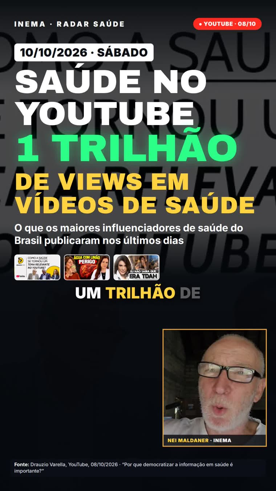
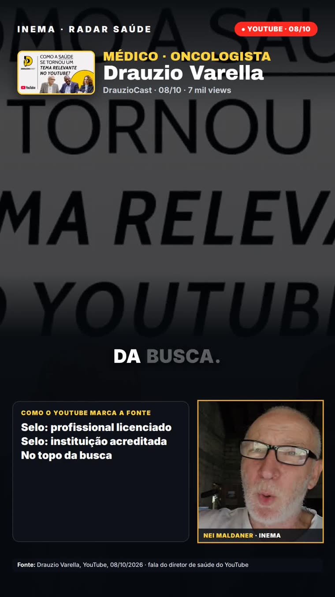

Los mayores influencers de salud de Brasil (médicos, nutricionistas y psicólogos), transcritos, verificados y resumidos en un video con la fuente en pantalla y Nei comentando.
saudeviral es un sistema que hace, solo, videos cortos (9:16) sobre lo que dijeron en sus videos los mayores influencers de salud de Brasil: los médicos, nutricionistas y psicólogos con mayor audiencia. Mira los videos de YouTube mediante transcripción, separa los hechos, los números y las polémicas, y arma un video con la fuente de cada dato en pantalla y Nei comentando (avatar). Todo se relata y se atribuye, y lo que no tiene consenso en la medicina sale con el sello "SIN CONSENSO". No sustituye una consulta médica. Los sábados y domingos sale también el video largo 16:9 "La semana explicada". Todo se publica solo en el canal INEMA TIA de YouTube y se envía a Telegram. Es el hermano de finviral: el mismo motor, otro tema.
Cada madrugada saudeviral lee lo que publicaron los canales, verifica cada hecho contra la transcripción y publica un video listo. No sustituye una consulta médica: el video relata lo que dijo cada uno, siempre con la fuente.
Cada hecho o número tiene que estar en la transcripción, con el fragmento literal. Canal, fecha y título aparecen en pantalla en cada escena.
Todo se atribuye ("según él"). Nada de dosis, medicamento o dieta como instrucción. Un tratamiento sin consenso lleva el sello "SIN CONSENSO" o queda fuera.
Guion con claude -p (suscripción, sin API), transcripción local con Whisper y avatar por el estudio de HeyGen. La oferta de cambio de plan de HeyGen siempre se rechaza.
Etapas encadenadas por auto/rodar.sh. Si la verificación reprueba dos veces, el video no se hace.
Lista los videos de los canales de canais.json (solo metadatos, yt-dlp), descarga el audio y lo transcribe localmente (inemavox, Whisper large-v3).
claude -p lee las transcripciones y graba base.md (cada hecho, quién lo dijo, el video y el fragmento literal), roteiro.json (falas y visuales) y legenda.txt.
auto/checar.py verifica que cada fragmento esté en la transcripción, que los números hablados estén escritos con letras, que las imágenes existan, que haya CTA y el aviso "Não substitui consulta médica" (no sustituye una consulta médica). Si reprueba, vuelve una vez para corrección.
HeyGen genera el avatar de Nei por el estudio (suscripción). motor/retempo.py alinea el arte con el habla. Si HeyGen falla, sale la versión con la foto y la voz de Nei (Chatterbox).
motor/palco.html se renderiza cuadro a cuadro con Playwright, con contadores, sellos y la fuente en cada escena. El avatar queda en la esquina.
auto/publicar.sh publica en el canal INEMA TIA de YouTube (lives2) con yt-pubx y siempre lo manda al bot v3 con el enlace. Si el avatar falló, la versión con foto solo va al bot.
Timers de systemd de usuario. El horario queda lejos de finviral (02:00) para que los dos no se disputen la GPU y HeyGen. Un día flojo no se convierte en video: el bot recibe "sin tema".
diario · 40–60 sLo que publicaron ayer y anteayer: una historia principal y como mucho uno o dos hechos más.semanal · 90 s a 2 minBalance de la semana: el tema más fuerte, la polémica y quién discrepó de quién. Después, el largo 16:9 "La semana explicada".domingo · ~90 sLas alertas, hábitos y mitos que señalaron en la semana, siempre atribuidos. Después, el largo 16:9 explicado.Base: Premio iBest 2024 (Influencers de Salud) y medición propia del 10/10/2026 en YouTube e Instagram (pesquisa/influenciadores.md). La recolección lee solo YouTube.
Drauzio Varella (oncólogo), Dayan Siebra (cirujano vascular), Fernando Lemos (intestino), Paulo Muzy (deporte), Ana Escobar (pediatra), Ana Beatriz Barbosa (psiquiatra, PodPeople), Juliano Teles, Moacir Rosa (corazón) y Thiago Castro (pediatría y autismo).
Patricia Leite y Daniel Cady (nutricionistas), Rossandro Klinjey (psicólogo), Leiliane Rocha (psicóloga) y Marcio Atalla (educador físico).
Lair Ribeiro, Instituto Dr. Barakat, Christian Aguiar, Victor Sorrentino, Juliano Teles y Moacir Rosa: entran, pero lo que no tiene respaldo científico sale con el sello "SIN CONSENSO".
Una computadora con GPU, Claude Code con la suscripción y el perfil de HeyGen de explicavideos.
yt-dlp para listar y descargar, inemavox (~/projetos/inemavox) para transcribir y cardshorts para la voz Chatterbox nei.
Node con Playwright (motor/node_modules es un enlace al de eventosextremospub) y ffmpeg.
claude (Claude Code con la suscripción), Xvfb :99 con el perfil de HeyGen de explicavideos, yt-pubx y el bot v3.
Comandos reales del repositorio, ejecutados en la raíz del proyecto.
La lista está en canais.json. Para pausar a alguien sin borrarlo, usa "ativo": false. El handle es la ruta del canal en YouTube.
{"handle": "channel/UC9zqTTVeClpqMQ5CLuJdWtw", "nome": "Drauzio Varella", "rk": "MÉDICO · ONCOLOGISTA", "ativo": true}
Si se destaca otro profesional de salud consolidado, con registro y confiable, el sistema sugiere incluirlo en el mensaje del bot. Solo entra con el ok de Nei.
Copia las unidades de systemd de usuario y activa los tres timers.
cp systemd/saudeviral-* ~/.config/systemd/user/ && systemctl --user daemon-reload systemctl --user enable --now saudeviral-diario.timer saudeviral-semanal.timer saudeviral-domingo.timer systemctl --user list-timers 'saudeviral-*'
Corre una ronda sin HeyGen y sin mandar al bot ni a YouTube.
SEM_AVATAR=1 SEM_BOT=1 auto/rodar.sh diario # prueba: sin HeyGen y sin enviar
Pasa el modo y la fecha; para saltar, agrega la línea en auto/pular.txt.
auto/rodar.sh diario 2026-10-09 # ronda de un día específico echo "2026-10-17 diario" >> auto/pular.txt # saltar una ronda
Cada ronda publica en INEMA TIA (lives2) y manda el video al bot v3 con el enlace. Si no hay tema o algo falla, el bot recibe el aviso.
La verificación y el guion siguen estas reglas.
Fecha dd/mm/aaaa y el hecho más fuerte ya en el primer cuadro.
Solo entra lo que está en la transcripción, con canal, fecha y título en pantalla.
"No sustituye una consulta médica" en todo video; dosis, medicamento o dieta nunca se vuelven instrucción.
La polémica es lo que ELLOS dijeron; la política siempre atribuida.
Habla en el tono de Nei ("você", "usted"), con números y años escritos con letras.
Gancho de comentario y CTA de gestión de agentes de IA en inema.club.
Dos cuadros del primer video de saudeviral (edición edicoes/2026-10-10-diario).

